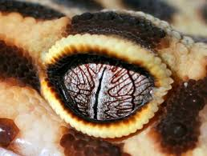

Shark corneas are similar to human corneas, which is why they have been used in human transplants.

 Scorpions can have as many as 12 eyes, but the box jellyfish has 24.
Scorpions can have as many as 12 eyes, but the box jellyfish has 24.
Scorpions can have as many as 12 eyes, but the box jellyfish has 24.
A dragonfly has 30,000 lenses in its eyes, assisting them with motion detection and making them very difficult for predators to kill.

The largest eye on the planet belongs to the Colossal Squid, and measures around 27cm across.
The largest eye on the planet belongs to the Colossal Squid, and measures around 27cm across.